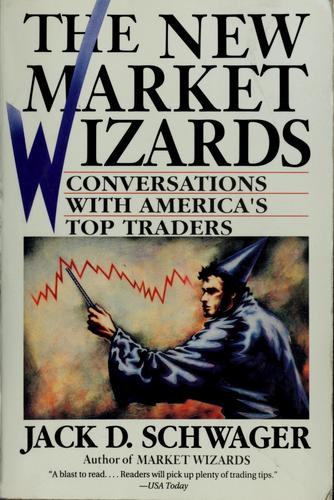

《金融怪杰》1989年出版三年后，杰克·施瓦格（Jack D. Schwager）拿出了篇幅更长的续作——1992年由HarperBusiness出版的《新金融怪杰》（The New Market Wizards），初版493页。相比第一部，施瓦格这次专门辟出一个章节谈"交易心理"，这个安排本身反映了他访谈完更多交易员后的一个判断：信息优势会随时间被抹平，但心理层面的纪律差距却很难被复制。
书中分量最重的访谈之一给了比尔·利普舒茨（Bill Lipschutz）——他在1980年代是所罗门兄弟公司（Salomon Brothers）最大的外汇交易员，据施瓦格估算，他在公司任职的八年间为所罗门贡献了超过五亿美元利润，其中有的年份他个人创造的外汇交易利润就超过三亿美元。利普舒茨回忆自己大学期间用一笔一万二千美元的遗产做期权交易，一度滚到二十五万美元，却在1982年9月的"格兰维尔反转"中几乎全部亏光——当时市场分析师乔·格兰维尔（Joe Granville）一份看空的电报引发抛售，而他当时的持仓恰好押错了方向。他后来在所罗门的成名一役，是发现一只由公司自家承销部门定价失误的英镑计价债券——由于英镑远期升水被错误地按即期汇率计算，这只债券的赎回条款存在明显套利空间。
量化交易员布莱尔·赫尔（Blair Hull）在访谈中介绍了他如何把期权定价模型用于场内做市，靠捕捉理论价与成交价之间的微小价差积累优势，这套方法后来发展成他创立的赫尔交易公司（Hull Trading Company）。另一位受访者威廉·埃克哈特（William Eckhardt）是数学家出身，他曾与理查德·丹尼斯（Richard Dennis）打赌"交易能否像技能一样教给普通人"，两人由此共同设计了后来闻名业内的"海龟"培训项目。在这本书里，埃克哈特谈的是另一个问题：为什么他认为交易者的主观判断往往是亏损的根源，系统化、规则化的方法更能对抗人性弱点。斯坦利·德鲁肯米勒（Stanley Druckenmiller）在访谈中讲述了他偏好集中持仓而非分散押注的逻辑——一旦确认某个宏观判断，就应该用足够大的仓位去兑现它，而不是把确信度不同的想法平均分配资金。号称"交易维克"（Trader Vic）的维克多·斯波朗迪（Victor Sperandeo）则在访谈中自述其职业生涯中连续十八年未曾出现过亏损年份，并详细拆解了他用于判断趋势反转的技术分析框架；专注日内波段的琳达·拉施克（Linda Bradford Raschke）则谈到自己如何在场内交易员出身的背景下，把持仓周期从几分钟拉长到几天，逐步适应从口头报价转向电子化的市场结构变化。
《新金融怪杰》出版后，封底印着《今日美国》（USA Today）的评语："读来酣畅淋漓……读者能从中获得大量实用的交易心得。"（A blast to read.... Readers will pick up plenty of trading tips.）"海龟实验"发起人理查德·丹尼斯（Richard Dennis）则写道："Jack Schwager simply writes the best books about trading I've ever read."（施瓦格写的交易书，是我读过最好的。）简体中文版《新金融怪杰》由张庆翻译、山西人民出版社2016年出版；更早的大陆译本曾在1998年题为《华尔街点金人》。比起前作里那些白手起家的传奇故事，这本书里更多篇幅留给了交易员如何应对已经拥有的成功——利普舒茨如何在巨大盈利面前保持仓位纪律，德鲁肯米勒如何避免因为一次判断正确就过度自信，这些内容对已经度过入门阶段、开始管理更大资金规模的读者，参考价值更直接。